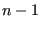

Keyword type: step
This option allows the specification of film heat transfer. This isconvective heat transfer of a surface at temperature  and with filmcoefficient
and with filmcoefficient  to the environment at temperature
to the environment at temperature  . Theenvironmental temperature
. Theenvironmental temperature  is also called the sinktemperature. The convective heat flux
is also called the sinktemperature. The convective heat flux  satisfies:
satisfies:
|  | (473) |
In order to specify which face the flux is entering or leaving thefaces are numbered. The numbering depends on the element type.
For hexahedral elements the faces are numbered as follows (numbers arenode numbers):
for tetrahedral elements:
for quadrilateral plane stress, plane strain and axisymmetric elements:
for triangular plane stress, plane strain and axisymmetric elements:
for quadrilateral shell elements:
for triangular shell elements:
for beam elements:
Film flux characterized by a uniform film coefficient is entered bythe distributed flux type label Fx where x is the number of the face, followed by the sinktemperature and the film coefficient. If the filmcoefficient is nonuniform the label takes the form FxNUy and a user subroutine film.f must be provided specifying thevalue of the film coefficient and the sink temperature. The label can be up to 20 characters long. Inparticular, y can be used to distinguish different nonuniform film coefficientpatterns (maximum 16 characters).
In case the element face is adjacent to a moving fluid the temperature ofwhich is also unknown (forced convection), the distributed flux type label isFxFC where x is the number of the face. It is followed by the fluid nodenumber it exchanges convective heat with and the film coefficient. To define anonuniform film coefficient the label FxFCNUy must be used and a subroutinefilm.f defining the film coefficient be provided. The label can be up to 20 characters long. Inparticular, y can be used to distinguish different nonuniform film coefficientpatterns (maximum 14 characters).
Optional parameters are OP, AMPLITUDE, TIME DELAY, FILM AMPLITUDE and FILMTIME DELAY. OP takes the value NEW or MOD. OP=MOD is default andimplies that the film fluxes on different faces are kept over allsteps starting from the last perturbation step. Specifying afilm flux on a face for which such a flux was defined in aprevious step replaces this value. OP=NEW implies that all previousfilm flux is removed. If multiple *FILM cards are present in astep this parameter takes effect for the first *FILM card only.
The AMPLITUDE parameter allows for the specification of an amplitudeby which the sink temperature is scaled (mainly used for dynamiccalculations). Thus, in that case the sink temperature values entered on the *FILMcard are interpreted as reference values to be multiplied with the(time dependent) amplitude value to obtain the actual value. At theend of the step the reference value is replaced by the actual value atthat time. In subsequentsteps this value is kept constant unless it is explicitly redefined or theamplitude is defined using TIME=TOTAL TIME in which case the amplitude keepsits validity. The AMPLITUDE parameter has noeffect on nonuniform and forced convective fluxes.
The TIME DELAY parameter modifies the AMPLITUDE parameter. As such, TIME DELAYmust be preceded by an AMPLITUDE name. TIME DELAY is a time shift by which theAMPLITUDE definition it refers to is moved in positive time direction. Forinstance, a TIME DELAY of 10 means that for time t the amplitude is takenwhich applies to time t-10. The TIME DELAY parameter must only appear once onone and the same keyword card.
The FILM AMPLITUDE parameter allows for the specification of an amplitudeby which the film coefficient is scaled (mainly used for dynamiccalculations). Thus, in that case the film coefficient values entered on the *FILMcard are interpreted as reference values to be multiplied with the(time dependent) amplitude value to obtain the actual value. At theend of the step the reference value is replaced by the actual value atthat time, for use in subsequent steps. The FILM AMPLITUDE parameter has noeffect on nonuniform fluxes.
The FILM TIME DELAY parameter modifies the FILM AMPLITUDE parameter. As such,FILM TIME DELAYmust be preceded by an FILM AMPLITUDE name. FILM TIME DELAY is a time shift by which theFILM AMPLITUDE definition it refers to is moved in positive time direction. Forinstance, a FILM TIME DELAY of 10 means that for time t the amplitude is takenwhich applies to time t-10. The FILM TIME DELAY parameter must only appear once onone and the same keyword card.
Notice that in case an element set is used on any line following *FILM thisset should not contain elements from more than one of the following groups:{plane stress, plane strain, axisymmetric elements}, {beams, trusses},{shells, membranes}, {volumetric elements}.
In order to apply film conditions to a surface the element set labelunderneath may be replaced by a surface name. In that case the ``x'' in theflux type label takes the value zero.
If more than one *FILM card occurs in the input deck the following rulesapply: if the *FILM is applied to the same node and the same face as in aprevious application then the prevous value and previous amplitude (includingfilm amplitude) are replaced.
First line:
Following line for uniform, explicit film conditions:
Following line for nonuniform, explicit film conditions:
Following line for forced convection with uniform film conditions:
Following line for forced convection with nonuniform film conditions:
Example: *FILM 20,F1,273.,.1
assigns a film flux to face 1 of element 20 with a film coefficient of 0.1 and a sinktemperature of 273.
Example files: oneel20fi.